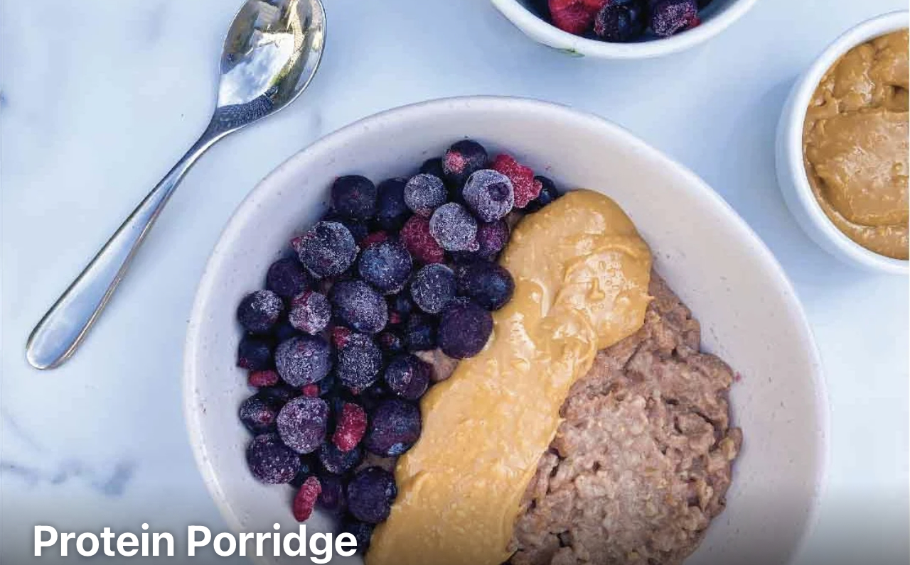

Description
Protein filled porridge, with frozen blueberries and peanut butter
Ingredients
- 70g rolled oats
- 26g protein powder
- 290g almond milk (unsweetened)
- 174g mixed berries
- 18g natural peanut utter
Steps
-
Mix oats with unsweetened almond milk (add more water if needed to get to your desired
consistency) and microwave for 1 min.
- Add protein powder and natural peanut butter and mix in well.
- Microwave for another 90 sec or until at desired consistency.
- Mix in berries and serve. Easy but delicious.
-
Tip: If you have time cook on stove and bring oats to boil then add protein powder and
natural peanut butter and simmer till cooked then add mixed berries.
-
Optional Seasoning - simply sprinkle a pinch of cinnamon on top to spice up your brekkie